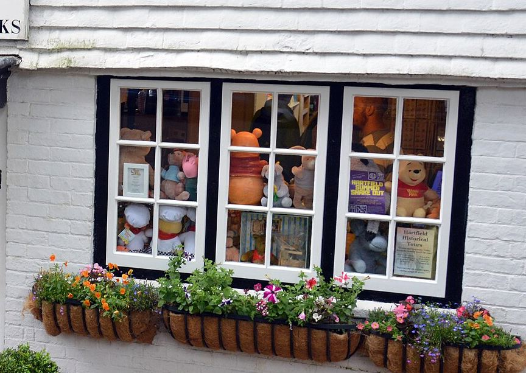
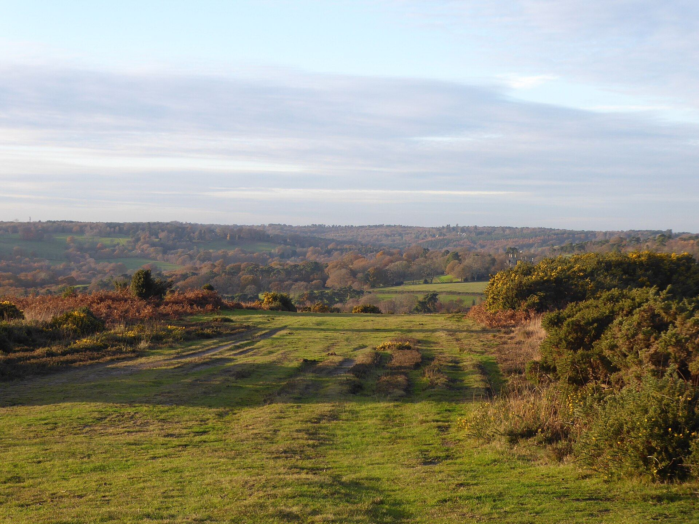

Hartfield · East Sussex
A little corner of storybook magic.
A welcoming tearoom, free museum and gift shop in Hartfield, on the edge of Ashdown Forest.
- Open dailyMon–Sat 11am–5pm
Sun & bank holidays 11am–4pm - Find usHigh Street, Hartfield
TN7 4AE - ParkingFree roadside parking on the High Street
- No booking neededTearoom tables are first come, first served
Three things under one roof
Tea, a little history, and a gift to take home
Chapter one In which we put the kettle on
The tearoom
Homemade sandwiches, cakes and scones, served in two rooms of a Grade II listed cottage: the E.H. Shepard Room, hung with prints of Shepard's sketches, and the cheerful Piglet's Tearoom.
- Walk-in only — no booking needed
- Gluten-free, vegan and dairy-free options
- Food served until around an hour before closing
Chapter two In which we learn where it all began
The free museum
A small museum on the life and work of A.A. Milne, E.H. Shepard and Christopher Robin — artwork, toys and books from a century of Winnie-the-Pooh.
Read our story
Chapter three In which we find the perfect present
The gift shop
Soft toys, books, collectables and keepsakes — from classic Pooh to keepsakes made for Pooh Corner itself. Can't visit? The whole shop is online, with UK and worldwide delivery.
1926 — 2026
A century of Pooh
Celebrating 100 years of Winnie-the-Pooh
Anniversary editions of the original books, commemorative soft toys and keepsakes made for Pooh Corner — gathered in one collection for the centenary year.
From the shop
Gifts we're fond of
Gift finder
Find a gift by budget
Free UK delivery on orders over £30.

Chapter four In which we go for a walk
Start your walk here
Poohsticks Bridge and the heathland of Ashdown Forest are close by — and easy to get lost on the way. Call in first and our team will point you in the right direction.
- Pick up our £2.50 guide map in the shop
- Ask the team for directions to Poohsticks Bridge
- For a longer walk, head up to the Enchanted Place and its memorial to Milne and Shepard
“…a mile away along a main road, up a steep hill, down a steep hill and in at the first shop on the left hand side.”
Christopher Milne, The Enchanted Places, on his childhood trips to this shop
Our story
A cottage with a long memory
Built in 1703 and once known as Sackville Cottage, the building became Pooh Corner in 1978. Three families have looked after it since, each adding a new chapter — most recently a museum dedicated to Milne and Shepard.
Read our story